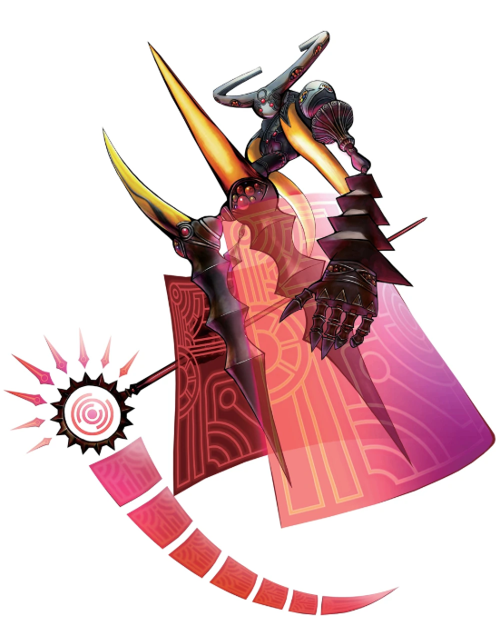
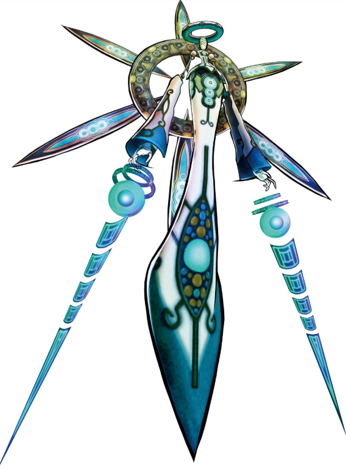
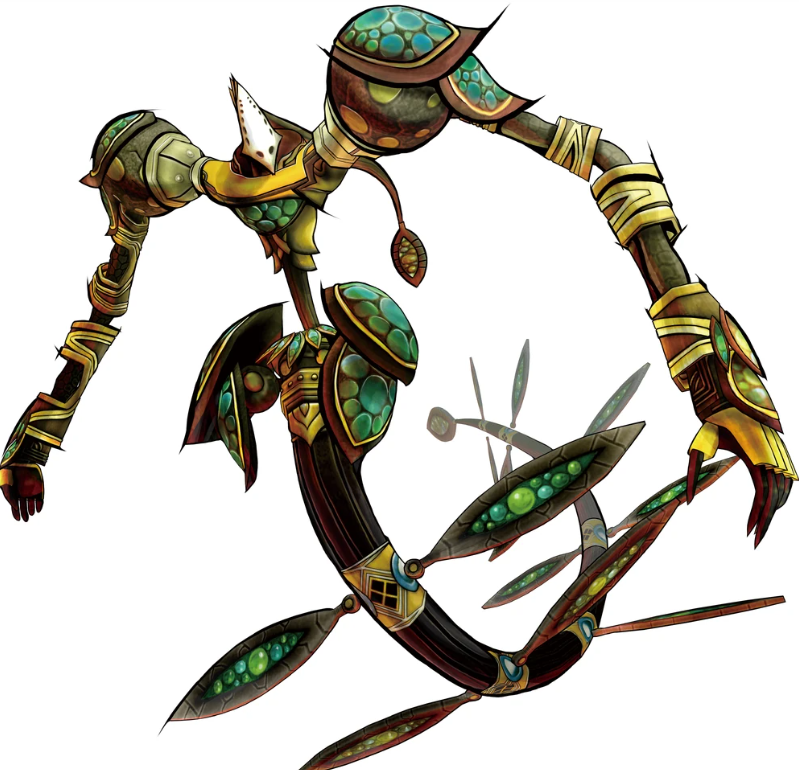
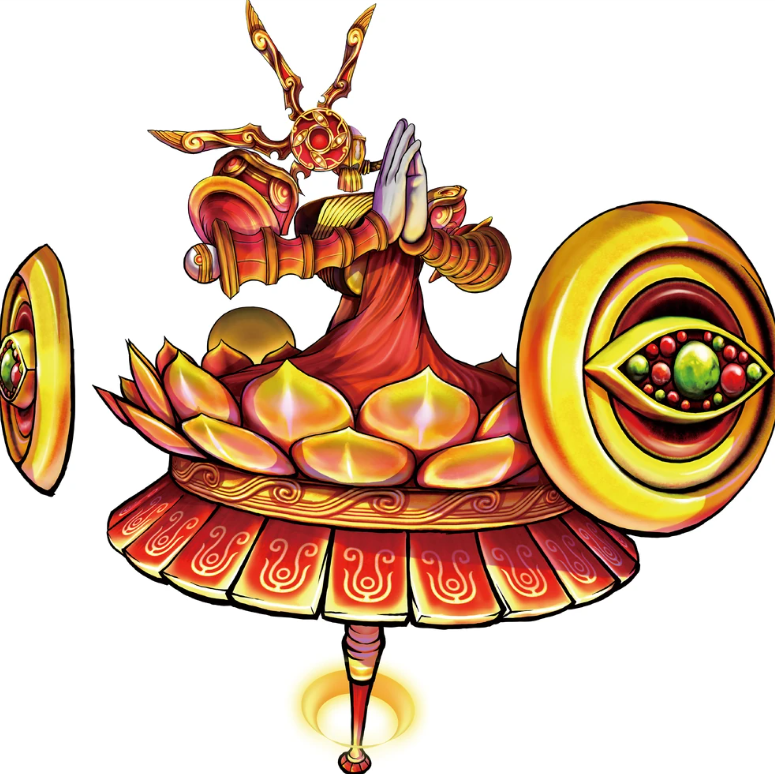
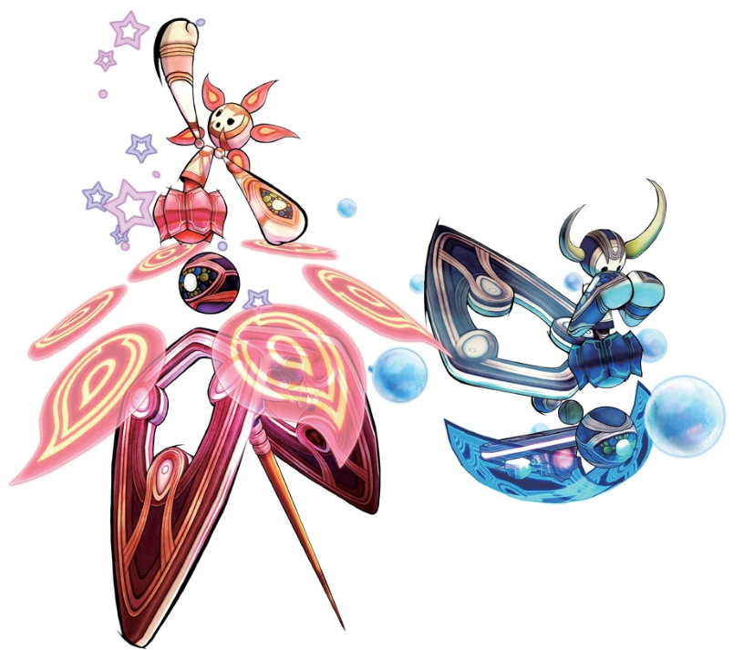
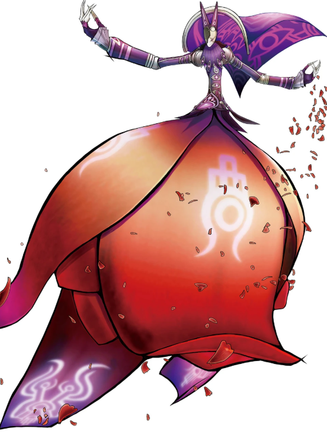
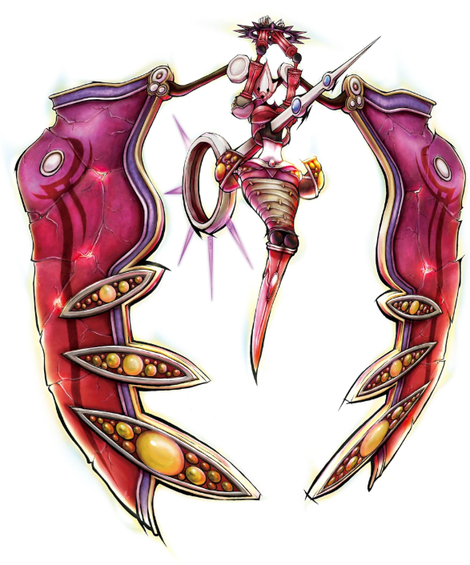
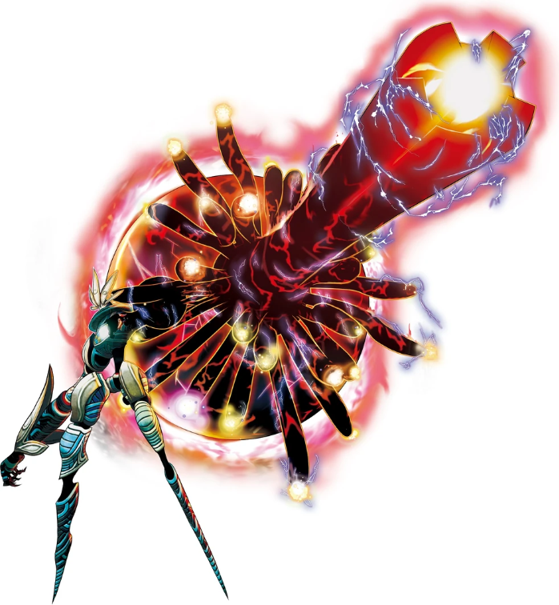
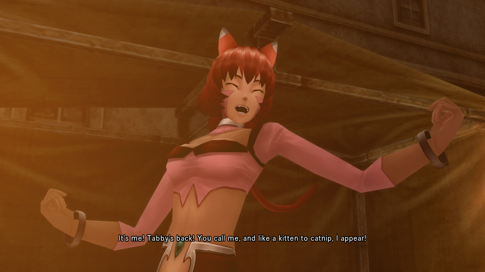

Skeith
HaseoO Terror da Morte. Protagonista e ex-caçador de PKs, que passa da vingança à redenção.

Oito jogadores capazes de invocar Avatares, a única força capaz de enfrentar a AIDA.
O Terror da Morte. Protagonista e ex-caçador de PKs, que passa da vingança à redenção.

A Miragem da Ilusão. Curandeira da Moon Tree que insiste em alcançar o coração de Haseo.

A Propagação. Steam Gunner bem-humorado, que foi Sieg em .hack//Liminality.

O Profeta. Líder do Project G.U., que já foi Wiseman no The World original.

A Maquinação. Um único personagem controlado por duas personalidades opostas.

A Tentadora. Imperador do Demon Palace, que começa como inimigo e vira aliado.

A Retribuição. Engenheira da CC Corp, rígida e leal ao Project G.U.

O Renascimento. Líder da Twilight Brigade e o verdadeiro Tri-Edge.

Shino: amiga de Haseo na Twilight Brigade. O coma dela é o que move toda a história.
Sakaki: manipulador da Moon Tree que tenta usar os Avatares para dominar a rede.
Silabus & Gaspard: os amigos da guilda Canard que acolhem Haseo quando ele volta ao nível 1.
Tabby: a garota-gato que entra na Twilight Brigade para ajudar Haseo.
Azure Kite: a IA criada por Aura para caçar a AIDA, confundida com Tri-Edge.

Clique numa imagem para ampliar.